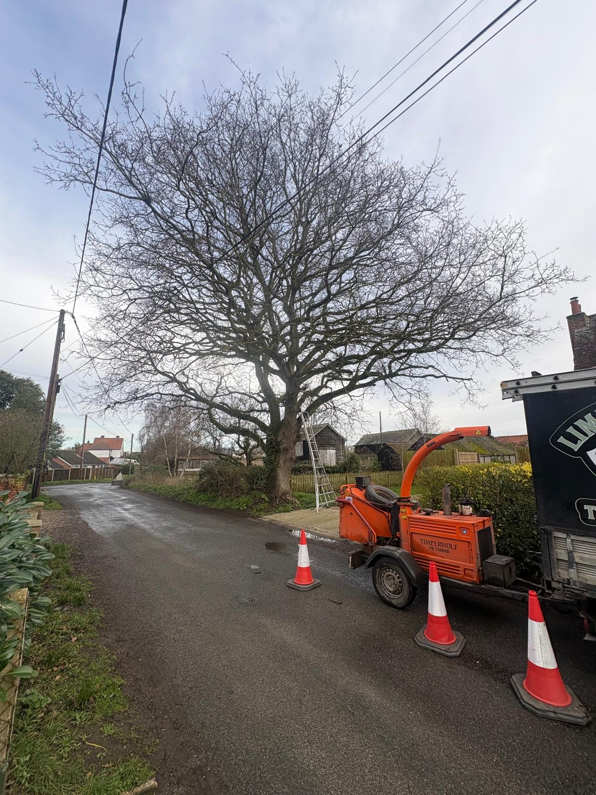

Colchester
Tree Surgeon.
Tree surgery built for a city of tight plots, mature suburbs and protected historic streets. Fully insured, NPTC-qualified and covering central Colchester, Lexden, Mile End, Highwoods, Stanway and beyond.
Britain's first city.
Modern tree problems.
Colchester's historic centre grew inside and around the Roman wall, leaving dense streets, buried archaeology and sensitive boundaries beside modern homes and businesses. Around the Dutch Quarter, Castle Park and the roads leading out of the centre, even routine tree work can involve pedestrians, parked vehicles, old walls and very limited working space.
Move west into Lexden or south towards Prettygate and Berechurch and the tree stock changes: larger plots, established avenues, mature garden specimens and broad crowns that have outgrown drives or extensions. Mile End, Highwoods and the newer edges bring another mix of woodland boundaries, development pressure and trees shared between neighbours.
Colchester City Council protects trees through TPOs, conservation areas and planning conditions. We check which controls apply, write a clear work specification and plan access before machinery arrives. That groundwork protects the tree, the property and the owner.

One city.
Nine ways we help.
From a single branch over a conservatory to coordinated clearance on a development plot.
Tree Felling & Removal
Controlled dismantling for trees boxed in by houses, extensions, garages and neighbouring gardens where open felling is impossible.
Learn moreCrown Reduction & Thinning
Managing large suburban crowns around Lexden and Prettygate without stripping away the tree's natural shape or future value.
Learn morePollarding
Maintaining established pollard cycles on roadside, garden and institutional trees so regrowth remains manageable.
Learn moreDead-Wooding & Pruning
Targeted removal of dead, split or damaged branches above pavements, parking areas, gardens and public-facing boundaries.
Learn moreStump Grinding
Compact stump removal where every metre of an urban garden matters, with access and underground services considered first.
Learn moreEmergency & Storm Response
Day-or-night response for trees on roofs, blocked drives, hanging limbs and sudden hazards across the city.
Learn moreCrown Lifting
Creating practical clearance above driveways, footways, sightlines and building edges without reducing the entire crown.
Learn moreSite Clearance
Coordinated vegetation, tree and stump clearance for construction, landscaping and access projects on the city's expanding edges.
Learn moreHedge Cutting
Precise trimming, height reduction and restoration for formal hedges, boundary screening and overgrown garden hedging.
Learn more
Urban tree work
has nowhere to hide
In Colchester, the method is visible to neighbours, road users and passers-by. Common constraints include:
-
TPOs, conservation areas and planning conditions requiring the correct council consent route
-
Terraced and central plots with no side access, forcing timber and brash through a narrow route
-
Mature trees spanning several gardens, with sheds, extensions and glazing beneath the crown
-
Work beside busy roads or footways where exclusion zones and carefully timed lowering matter
-
Development-edge trees where roots, future canopy and retained habitat need to be understood
Across the city,
not just the centre
Our Colchester coverage follows the city's neighbourhoods and residential edges, including:
- Lexden
- Mile End
- Highwoods
- Stanway
- Prettygate
- Berechurch
- Old Heath
- + nearby areas
We also travel into the villages around the city, including West Bergholt, Eight Ash Green, Copford and Ardleigh. If your area is not listed, call to check or view our full North Essex and Suffolk coverage.

Tree surgery in Colchester,
questions answered
Straight answers about protected trees, restricted access, neighbourhood coverage and tree surgery costs in Colchester.
Can you work on protected trees in Colchester?
Yes. Colchester has multiple conservation areas as well as trees protected by individual TPOs. We check the relevant planning constraints before work and can prepare the specification needed for an application to Colchester City Council.
Can you remove a tree from a restricted-access Colchester garden?
Yes. Where a garden has no safe felling space, we can dismantle the tree in sections and use ropes to control pieces around roofs, fences, sheds and neighbouring plots. Access and waste removal are planned during the initial visit.
Which parts of Colchester do you cover?
We cover the whole Colchester area, including the city centre, Lexden, Mile End, Highwoods, Stanway, Prettygate, Berechurch, Old Heath and surrounding villages. Call if you would like us to confirm your address.
Will you need to check for a Tree Preservation Order (TPO)?
We check the tree and location before protected work begins. A tree may be covered by an individual or group TPO, sit inside a conservation area, or be subject to a planning condition, and the correct route depends on which protection applies.
Do you offer emergency tree work in Colchester?
Yes. We provide 24/7 storm and emergency response for fallen trees, hanging branches and newly dangerous trees throughout Colchester. Keep people clear and contact the electricity network operator first if power lines are involved.
How much does tree surgery cost in Colchester?
The price depends on tree size, access, nearby buildings, traffic or pedestrian management, rigging requirements and waste removal. We carry out a free site visit and provide a written, no-obligation quote.
See everywhere
we cover
Colchester anchors our eastern Essex coverage, with regular work continuing into the surrounding villages and Suffolk border.
View Our Full Coverage Area